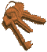

| HAVE YOU EVER HAD TO LEAVE SOMEWHERE IN A HURRY? HAD THE COURAGE TO GO, PACK YOUR BAGS, DANCE DOWN THE SIDE OF YOUR HOUSE, OR LEAVE WITH NOTHING,
NOT EVEN THE SHOES ON YOUR FEET? Our Glass House is based on real-life testimonies from women and men who have survived domestic abuse and follows the lives of six characters, with action happening simultaneously around you.  The Guardian The Independent The Times Scotsman Winner of Special Commendation Award from Amnesty International Freedom of Expression Awards 2013 Monday 11th November – Saturday 30th November 2013 Shows will start at 4pm and 7.30pm Please arrive at the meeting point fifteen minutes early Please meet at the red telephone box on the crossroads of Marquis Road / Cantelowes Road / Agar Grove, off York Way, NW1 9UE Tickets £10 Full price / £5 Concession Buy your tickets online at cptheatre.co.uk Or by phone on: 0844 771000 (Not suitable for under 15s) Not accessible for wheelchair users. No parking is available, please check our website for a map and public transport links. www.commonwealththeatre.co.uk This show is co-produced by Common Wealth and Camden People's Theatre, with funding from Arts Council England and Camden Council. |